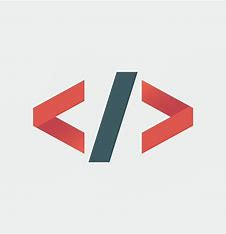
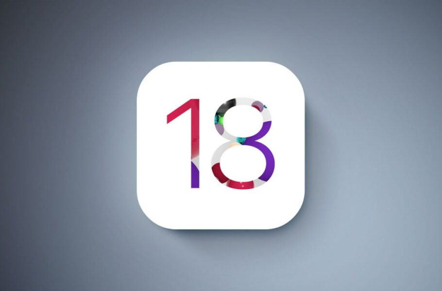

طبق بنچمارکهای اولیه، اسنپدراگون 8 نسل 3 نهتنها رقبایش در دنیای اندروید را شکست میدهد، بلکه میتواند A17 پرو را هم به چالش بکشد

|  | صفحه اصلی | درباره ما | تماس با ما |
|---|
1..اسنپدراگون 8 نسل 3 در برابر اپل A17 پرو؛ کدامیک در بنچمارکها عملکرد بالاتری دارد؟
طبق بنچمارکهای اولیه، اسنپدراگون 8 نسل 3 نهتنها رقبایش در دنیای اندروید را شکست میدهد، بلکه میتواند A17 پرو را هم به چالش بکشد |
|
2..تصویر روز ناسا: ثبت تصویری از خوشه کهکشانی برساووش توسط «اقلیدس»
در این عکس، آینه اصلی اقلیدس بیش از 1000 کهکشان را در خوشه برساووش به تصویر کشیده است. |
3..اپل توسعه iOS 18 را بهدلیل باگهای زیاد آن موقتاً متوقف کرد
«کریگ فدریگی»، مدیر نرمافزار اپل، کارمندان را تحت فشار قرار داده است تا بهجای توسعه ویژگیهای جدید، به رفع اشکالات موجود بپردازند. |
 |
تولید شده توسط مهرسام محسنی
©️کلیه حقوق استفاده از این سایت مربوط به شرکت ##### میباشد .و هرگونه سو استفاده مشمول پیگرد قانونی میگردد